СП 472.1325800.2019 «Армогрунтовые системы мостов и подпорных стен на автомобиль»
О документе: разработчики, утверждение, регистрация, ключевые слова
СВОД ПРАВИЛ СП 1325800.2019
Правила проектирования
Издание официальное
1 ИСПОЛНИТЕЛИ - ЗАО «ПРОМТРАНСНИИПРОЕКТ», АО «ЦНИИС»
2 ВНЕСЕН Техническим комитетом по стандартизации ТК 465 «Строительство»
3 ПОДГОТОВЛЕН к утверждению Департаментом градостроительной деятельности и архитектуры Министерства строительства и жилищно-коммунального хозяйства Российской Федерации (Минстрой России)
4 УТВЕРЖДЕН приказом Министерства строительства и жилищно-коммунального хозяйства Российской Федерации от 24 декабря 2019 г. № 855/пр и введен в действие с 25 июня 2020 г.
5 ЗАРЕГИСТРИРОВАН Федеральным агентством по техническому регулированию и метрологии (Росстандарт)
6 ВВЕДЕН ВПЕРВЫЕ
В случае пересмотра (замены) или отмены настоящего свода правил соответствующее уведомление будет опубликовано в установленном порядке. Соответствующая информация, уведомление и тексты размещаются также в информационной системе общего пользования - на официальном сайте разработчика Минстрой России в сети Интернет
© Минстрой России, 2019
Настоящий нормативный документ не может быть полностью или частично воспроизведен, тиражирован и распространен в качестве официального издания Министерства строительства и жилищно-коммунального хозяйства Российской Федерации
Дата введения 2020-06-25
УДК 624.21.09/624-2 ОКС 93.040
Ключевые слова: армогрунтовые системы, армированный грунт, мостовое сооружение, автомобильная дорога, подпорные стены
Руководитель организации-разработчика
ЗАО «ПРОМТРАНСНИИПРОЕКТ»
| Исполнительный директор | А.Ю. Эглескалн | |
|---|---|---|
| Руководитель разработки | Зам. директора по научной работе | Л.А. Андреева |
| Исполнитель | Начальник отдела комплексных исследований, стандартизации и логистического сопровождения проектов | И. П. Потапов |
Введение
Настоящий свод правил разработан в соответствии с Федеральным законом от 30 декабря 2009 г. № 384-ФЗ «Технический регламент о безопасности зданий и сооружений».
Свод правил разработан авторским коллективом ЗАО «ПРОМТРАНСНИИПРОЕКТ» (руководитель темы -д-р техн. наук Л.А. Андреева ); АО «ЦНИИС» (руководитель темы - канд. техн. наук А.Д. Соколов , канд. техн. наук Ю.В. Новак , канд. техн. наук И.С. Сухов) .
1Область применения
- на железных дорогах;
- на автомобильных дорогах лесозаготовительных и лесохозяйственных организаций, не выходящих на сеть дорог общего пользования и к водным путям;
- на многолетнемерзлых грунтах основания;
- коммуникационных сооружений, не предназначенных для пропуска транспортных средств, пешеходов;
- подпорных сооружений в виде лавинозащитных сооружений, селенакопителей, защитных сооружений от скально-обвальных явлений.
Правила проектирования
ARMORED SYSTEMS OF BRIDGES AND SUPPORTING WALLS ON ROADS.
Design rules
2Нормативные ссылки
В настоящем своде правил использованы нормативные ссылки на следующие документы:
ГОСТ 5781-82 Сталь горячекатаная для армирования железобетонных конструкций. Технические условия
ГОСТ 25100-2011 Грунты. Классификация
ГОСТ 25607-2009 Смеси щебеночно-гравийно-песчаные для покрытий и оснований автомобильных дорог и аэродромов. Технические условия
ГОСТ 27751-2014 Надежность строительных конструкций и оснований. Основные положения
ГОСТ 28013-98 Растворы строительные. Общие технические условия ГОСТ 32703-2014 Дороги автомобильные общего пользования. Щебень и гравий из горных пород. Технические требования
ГОСТ 32730-2014 Дороги автомобильные общего пользования. Песок дробленый. Технические требования
ГОСТ 32960-2014 Дороги автомобильные общего пользования. Нормативные нагрузки, расчетные схемы нагружения
ГОСТ 33390-2015 Дороги автомобильные общего пользования. Мосты. Нагрузки и воздействия
ГОСТ Р 55028-2012 Дороги автомобильные общего пользования. Материалы геосинтетические для дорожного строительства. Классификация, термины и определения
СП 14.13330.2018 «СНиП II-7-81* Строительство в сейсмических районах»
СП 20.13330.2016 «СНиП 2.01.07-85* Нагрузки и воздействия» (с изменениями № 1, № 2)
СП 22.13330.2016 «СНиП 2.02.01-83* Основания зданий и сооружений» (с изменениями № 1, № 2, № 3)
СП 24.13330.2011 «СНиП 2.02.03-85 Свайные фундаменты» (с изменениями № 1, № 2, № 3)
СП 28.13330.2017 «СНиП 2.03.11-85 Защита строительных конструкций от коррозии» (с изменениями № 1, № 2)
СП 34.13330.2012 «СНиП 2.05.02-85* Автомобильные дороги» (с изменениями № 1, № 2)
СП 35.13330.2011 «СНиП 2.05.03-84* Мосты и трубы» (с изменениями № 1, № 2)
СП 45.13330.2017 «СНиП 3.02.01-87 Земляные сооружения, основания и фундаменты» (с изменениями № 1, № 2)
СП 46.13330.2012 «СНиП 3.06.04-91 Мосты и трубы» (с изменениями № 1, № 3, № 4)
- СП 47.13330.2016 «СНиП 11-02-96 Инженерные изыскания для строительства. Основные положения»
- СП 71.13330.2017 «СНиП 3.04.01-87 Изоляционные и отделочные покрытия» (с изменением № 1)
СП 78.13330.2012 «СНиП 3.06.03-85 Автомобильные дороги» (с изменением № 1)
СП 268.1325800.2016 Транспортные сооружения в сейсмических районах. Правила проектирования
СП 269.1325800.2016 Транспортные сооружения в сейсмических районах. Правила уточнения исходной сейсмичности и сейсмического микрорайонирования
Примечание - При пользовании настоящим сводом правил целесообразно проверить действие ссылочных документов в информационной системе общего пользования - на официальном сайте федерального органа исполнительной власти в сфере стандартизации в сети Интернет или по ежегодному информационному указателю «Национальные стандарты», который опубликован по состоянию на 1 января текущего года, и по выпускам ежемесячного информационного указателя «Национальные стандарты» за текущий год. Если заменен ссылочный документ, на который дана недатированная ссылка, то рекомендуется использовать действующую версию этого документа с учетом всех внесенных в данную версию изменений. Если заменен ссылочный
СП 1325800.2019
документ, на который дана датированная ссылка, то рекомендуется использовать версию этого документа с указанным выше годом утверждения (принятия). Если после утверждения настоящего свода правил в ссылочный документ, на который дана датированная ссылка, внесено изменение, затрагивающее положение, на которое дана ссылка, то это положение рекомендуется применять без учета данного изменения. Если ссылочный документ отменен без замены, то положение, в котором дана ссылка на него, рекомендуется применять в части, не затрагивающей эту ссылку. Сведения о действии сводов правил целесообразно проверить в Федеральном информационном фонде стандартов.
3Термины и определения
В настоящем своде правил применены следующие термины с соответствующими определениями:
- 3.1армированный грунт
- Композитный материал, состоящий из насыпного грунта и армирующих его более прочных элементов. [СП 22.13330.2014, пункт 3.1]
- 3.2армогрунтовая система
- Система, состоящая из грунта основания, уплотняемых слоев грунта насыпи и армирующих элементов в виде металлических стержней, полос, арматурных каркасов или геосинтетических тканей, решеток, сеток, закладываемых между слоями грунта насыпи с определенным вертикальным шагом, и облицовок различных конструкций.Источник: СП 46.13330.2012, пункт Б.3
- 3.3армирующий элемент
- Составная часть армированного грунта, обеспечивающего восприятие повышенных сжимающих и (или) растягивающих напряжений.
- 3.4коэффициент устойчивости
- Числовая величина, определяющая степень устойчивости склона или откоса.
- 3.5оползневое давление
- Результирующая сила давления грунтов (распределенного по глубине оползневого или оползнеопасного массива) на удерживающее сооружение, определяемая как погонная нагрузка по ширине оползня.
4Общие положения
5Требования к инженерно-геологическим изысканиям
СП 1325800.2019
6Требования к армогрунтовым системам мостов
- системы армирования конусов;
- устои диванного типа на армогрунтовых основаниях;
- устои с раздельными функциями;
- многофункциональные армогрунтовые системы;
- системы для ремонта и реконструкции;
- буровые сваи в геосинтетических оболочках.
Системы армирования конусов (рисунок В.1) следует применять в типовых конструкциях обсыпных устоев мостов и путепроводов с целью уменьшить или полностью снять давление грунта насыпи с несущих элементов устоя, находящихся внутри конуса, а также для повышения устойчивости конуса и устройства более крутых его откосов.
Пролетное строение опирается на диванный блок, опирающийся, в свою очередь, на армированный концевой участок подходной насыпи.
- скальные грунты;
- гравелистые грунты с песчаным или глинистым заполнителем;
- крупные и средней крупности пески, плотные и средней плотности, необводненные;
- твердые и полутвердые глины и суглинки;
- отсутствие в сжимаемой толще прослоек очень сильнодеформируемых и сильнодеформируемых грунтов по ГОСТ 25100.
- разгрузку крайних опор от давления грунта насыпи и исключения конуса, т.е. обеспечения схемы устоя с раздельными функциями;
- разгрузку ростверков фундаментов крайних опор от давления грунта, создаваемого весом подходной насыпи;
- защиту конструкций моста или путепровода от воздействий оползневых склонов;
- минимизацию осадок концевого участка насыпи, если он подстилается слабыми грунтами основания, путем устройства «висячей» насыпи, опирающейся на свайное поле и гибкий ростверк;
- устойчивость насыпи в поперечном к оси направлении.
6.6. Для устройства армогрунтовых систем мостов допускается устройство буровых свай в геосинтетических оболочках. Буровые сваи следует проектировать согласно требованиям СП 24.13330.
7Элементы, изделия и конструкции, составляющие армогрунтовые системы
- угол внутреннего трения φ ≥ 35º;
- удельное сцепление с ≥ 0;
- коэффициент фильтрации К ф≥2,0 м/сут;
- коэффициент неоднородности 𝑑10 𝑑60 ≥ 2,0 ;
- коэффициент уплотнения песка при формировании армогрунтовой системы должен быть не менее 0,98 максимальной плотности по кривой стандартного уплотнения.
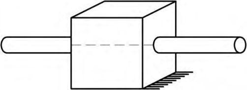
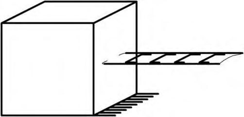
в г
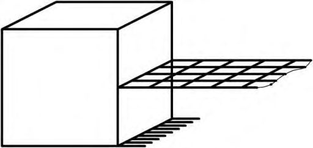
а - стержни; б - арматурные каркасы; в - георешетка; г - геоткань Рисунок 1 - Виды армирующих элементов
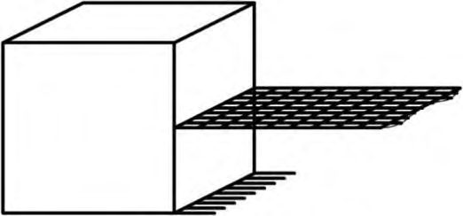
1 - продольные стержни (диаметр по расчету); 2 - поперечные стержни диаметр ≈ 12 мм; 3 - серьги для крепления к лицевой стенке (оцинкованные); 4 - отверстие для болта Примечание - Все детали после сварки оцинкованы (Δ = 50 мкм), обмазаны битумом и обклеены геосинтетической тканью на битумной мастике.
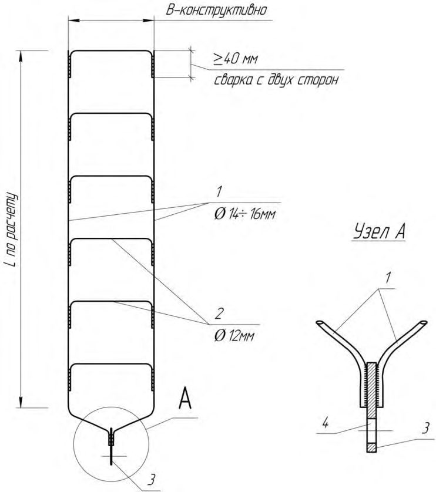
Рисунок 2 - Армирующий элемент в виде арматурного каркаса
7.6Фундаменты лицевых стенок
При монолитных железобетонных фундаментах следует укладывать щебеночную подушку с проливкой цементным раствором под его подошвой. Подушка выполняется из фракционного щебня и устраивается методом заклинки.
Сборные железобетонные элементы лицевой стенки требуется устанавливать на фундамент на цементном растворе не ниже марки М200 по ГОСТ 28013. а
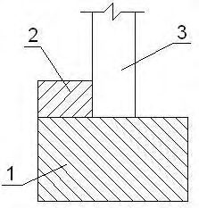
а - ленточный с упором; б - ленточный с нишей; в - фундамент плитного типа; 1 - железобетонный фундамент ленточный; 2 - железобетонный упор; 3 - лицевая стенка; 4 - ниша в фундаменте; 5 - железобетонный фундамент ленточный с нишей; 6 железобетонная плита; 7 - блок лицевой стенки
Рисунок 3 - Фундаменты мелкого заложения
.
7.7Лицевые стенки армогрунтовых систем мостов
Лицевые стенки должны обеспечивать полную водои грунтонепроницаемость. Для этого швы лицевых стенок, собираемых из отдельных крупных или мелких блоков должны быть проклеены гидроизоляционным материалом в соответствии требованиями СП 71.13330. Применение сухой кладки без гидроизоляции швов не допускается.
Лицевые стенки армогрунтовых систем мостов следует проектировать только вертикальными. Между лицевой стенкой и армогрунтовой системой следует предусматривать зазор не менее 20 см для возможности деформации геосинтетики.
В торце армогрунтовой системы следует устраивать упорно-дренажные призмы (рисунок 4). Из призмы воду необходимо отводить за пределы лицевой стенки.
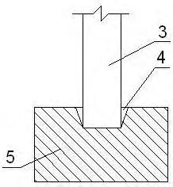
1 - армирующая геоткань; 2 - песок; 3 - щебеночная призма; 4 - дорнит;
5 - разделительный фильтрующий материал (нетканый)
Рисунок 4 - Устройство дренажной призмы
8Основные требования к проектированию армогрунтовых систем мостов
9Нагрузки и воздействия
10Предельные состояния и механизмы разрушения армогрунтовых систем
На рисунке В.7 представлены виды механизмов разрушения:
- а) адгезионное разрушение, связанное с выдергиванием армирующих элементов из неподвижной части грунта, за границами призмы обрушения;
- б) разрыв армирующих элементов по линии наибольших продольных сил в этих элементах;
- в) сдвиг конструкции по плоскости основания (плоский сдвиг);
- г) опрокидывание конструкции вокруг нижнего переднего ребра;
- д) сдвиг конструкции по кругло-цилиндрической или иной поверхности скольжения;
- е) состояние, связанное с разрывом нижних слоев армирующих прослоек вследствие осадок.
Примечание - В приложении А приведено предельное состояние армогрунтовой системы, возникающее при трапецеидальном сечении системы с уменьшающейся длиной армирующих элементов в нижней части.
11Требования к конструированию
12Расчеты армогрунтовых систем
- а) по предельным состояниям первой группы определяют:
- армирующий материал и его размещение по высоте (см. 12.7);
- заделку армирующих элементов за призму обрушения грунта в его неподвижную часть (см. 12.8);
- устойчивость положения армогрунтового блока на сдвиг, опрокидывание и скольжение по поверхностям различного вида (см. 12.9).
- б) по предельным состояниям второй группы определяют:
- осадки основания и насыпи, темпы их протекания;
- перемещения передней поверхности армогрунтовой системы с целью проверки отсутствия ее контакта с бетоном лицевой стенки.
12.2Учет ползучести армирующих геосинтетических материалов
СП 1325800.2019
достигнута с учетом коэффициента запаса в течении расчетного срока эксплуатации сооружения. Для учета ползучести материала следует применять значения коэффициента А1, приведенные в таблице 1.
Таблица 1 - Значения коэффициента A1 для геосинтетических материалов из различного сырья
| Исходное сырье | Обозначение | Значения коэффициента A 1 для испытанных и сертифицированных материалов | Значения коэффициента A 1 для не имеющих сертификата на данный показатель материалов |
|---|---|---|---|
| Арамид | AR | 1,5 - 2,0 | 3,5 |
| Полиамид | PA | 1,5 - 2,0 | 3,5 |
| Полиэтилен | PE | 2,0 - 3,5 | 6,0 |
| Полиэстер | PES | 1,5 - 2,5 | 3,5 |
| Полипропилен | PP | 2,5 - 4,0 | 6,0 |
| Поливинилалкоголь | PVA | 1,5 - 2,5 | 3,5 |
12.2.2 При проведении расчетов следует ограничивать величину
где 𝜀𝑡1 - относительная деформация в начале эксплуатации сооружения; 𝜀𝑡2 -относительная деформация в конце срока эксплуатации сооружения.
Величина (рисунок В.9) при расчетах по второй группе предельных состояний должна быть ограничена следующими значениями:
0,5% - при проектировании устоев мостовых сооружений;
1,0% - при проектировании подпорных стен.
где 𝑆 𝑎 пр - долговременная проектная прочность материала;
𝑆кр - кратковременная прочность на разрыв (марка);
А1 -понижающий коэффициент, учитывающий ползучесть геосинтетического материала;
А2 - понижающий коэффициент, учитывающий снижение прочности в результате повреждений при транспортировании, укладке материала, отсыпке и уплотнении грунта, зависящий от типа грунтового материала;
А3 - понижающий коэффициент, учитывающий наличие стыков и нахлестов соседних полотен;
А4 - понижающий коэффициент, учитывающий влияние на прочность микроорганизмов, ультрафиолетового излучения, химические агрессивные воздействия (включая pH), перепад температур;
А5 - понижающий коэффициент, учитывающий деградацию материала под действием внешних динамических факторов (сейсмика, взрывные воздействия);
в - общий коэффициент запаса, принимаемый равным 1,4.
Коэффициенты А1 - А5 принимают (в зависимости от исходного сырья для производства геосинтетических армирующих материалов).
Величина коэффициента А2 должна быть определена на контакт с грунтами трех категорий:
- мелкозернистый грунт (песок, супесь, суглинок, глина);
- щебень, ПГС и гравий фракций до 31,5 мм;
- щебень, ПГС и гравий фракций до 70 мм.
При отсутствии данных значение коэффициента А2 следует принимать равным 1,5 при контакте с песком или грунтом с остатками на сите с ячейками 2 мм менее 10 % по массе. При контакте с каменным материалом с окатанными частицами (гравий) принимают А2 = 2,0.
СП 1325800.2019
Значение коэффициента А3 принимают равным 1,0, если нагрузки, воспринимаемые геосинтетическим материалом, действуют в одном направлении. При этом при проектировании должны быть исключены стыки и нахлесты в рабочем направлении.
Величину А4, следует назначать в соответствии с таблицей 2. Применять материал следует только в нейтральной среде (pH = 4-9). В кислотной среде (pH = 0-4) следует использовать только материалы, прошедшие испытания.
Таблица 2 - Значения понижающего коэффициента A4 для геосинтетических материалов из различного сырья
| Исходное сырье | Обозначение | Нормативные значения коэффициента A 4 |
|---|---|---|
| Арамид | AR | 3,3 |
| Полиамид | PA | 3,3 |
| Полиэтилен | PE | 3,3 |
| Полиэстер | PES | 2,0 |
| Полипропилен | PP | 3,3 |
| Поливинилалкоголь | PVA | 2,0 |
Коэффициент А5 следует принимать равным 1,0.
Согласно СП 14.13330, СП 268.1325800 горизонтальное сейсмическое ускорение определяют как произведение К 0 ·К1 ·А, где К 0 принимают равным 1,0, К 1=0,3, А принимают равным 0,1, 0,2 и 0,3 для сейсмичности 7, 8 и 9 баллов. Коэффициент Кх равен 0,05, 0,1 и 0,2 для сейсмичности 7, 8 и 9 баллов соответственно.
При наклоне вектора сейсмического ускорения к горизонтали в 30º коэффициент Ку =0,5 Кх . *
Активное давление грунта на расчетную плоскость АВ армогрунтовой системы следует определять по формуле
Условные обозначения в формулах приведены на рисунке В.10. Знак «плюс» соответствует направленной вниз вертикальной составляющей силы инерции. Угол наклона плоскости обрушения θс определяют согласно 12.6.
Суммарное усилие в армирующих прослойках S Σ армогрунтовых систем при плоской поверхности засыпки должно быть равно
* Указанное соотношение Ку =0,5 Кх справедливо для случаев, когда эпицентр землетрясения находится на значительном удалении от объекта строительства. при α=β= = 0:
α - угол наклона к горизонтали плоской поверхности засыпки.
При горизонтальной поверхности засыпки ( α =0) и горизонтальных армирующих прослойках ( β =0):
12.5Определение коэффициента активного давления грунта насыпи
- наклонная лицевая плоскость ≠0;
- наклонная поверхность грунта засыпки α ≠0;
- наклонные армирующие элементы β ≠0.
Рисунок 5 - Схема армогрунтовой системы
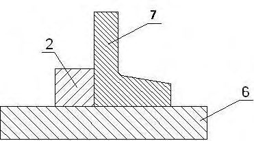
Коэффициент активного давления грунта λ а определяют по формуле
12.5.4 Построение эпюры условно распределенного усилия в армирующих элементах
Усилия в армирующих элементах могут быть заменены распределенной нагрузкой
где Р а - активное давление грунта;
S а - интенсивность условно распределенного усилия в армирующих элементах; λ а - коэффициент активного давления грунта;
- нормативный удельный вес грунта засыпки; h - заглубление точки от поверхности засыпки;
f - коэффициент надежности по нагрузке.
Пример построения эпюры приведен на рисунке В.11.
12.6Определение угла наклона опасной плоскости обрушения грунта
- в зависимости от положения этой плоскости внешние (постоянные и временные) нагрузки могут попадать в пределы призмы обрушения и влиять на величину активного давления грунта и усилия в армирующих элементах или находиться за пределами призмы обрушения, не влияя на расчет;
- армирующие элементы, воспринимающие активное давление грунта, должны передавать его на неподвижную часть грунта за призмой обрушения, таким образом, длина армирующих элементов зависит от размеров призмы обрушения грунта.
На рисунке проводят линию естественного откоса BF, на нее опускают линию AM под углом (90+ β ). Вычисляют отрезок BD, из точки D проводят линию DC параллельно AM, т.е. тоже под углом (90+ β ) к линии естественного откоса. Точка С определяет положение плоскости обрушения грунта BC и угол ее наклона θ .
Рисунок 6 - Схема к определению положения опасной плоскости обрушения и угла наклона
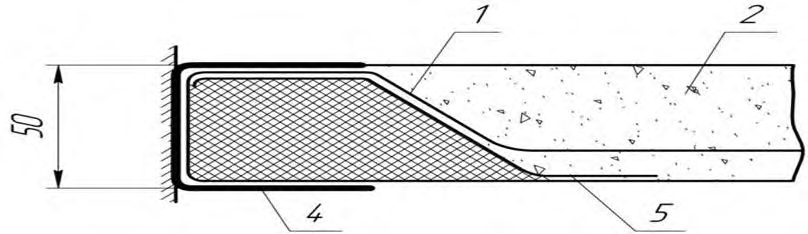
где ω 1 - площадь предполагаемой призмы обрушения; ω 2 - площадь силового треугольника, построенного на следе плоскости обрушения.
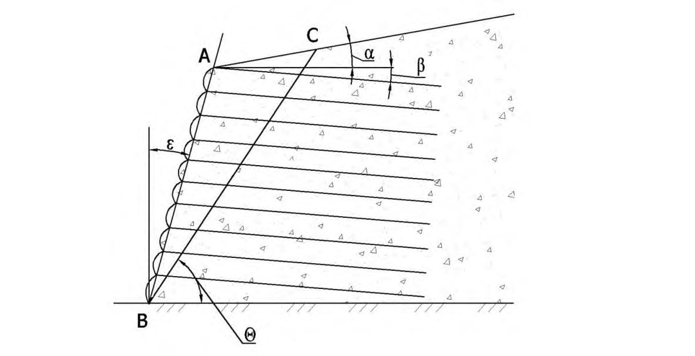
1 - условная напорная грань; 2 - поверхность грунта; 3 - основная линия
Рисунок 7 - Определение положения опасной плоскости скольжения ВС и угла θ для армогрунтовых систем
12.6.4 Аналитический способ определения положения опасной плоскости обрушения грунта
Величина суммарного усилия в армирующих элементах определяется по формуле
где 𝑆𝑎 - суммарное усилие в армирующих элементах;
𝐺 - вес призмы обрушения; 𝜃 - угол наклона плоскости обрушения; 𝜑 - нормативный угол внутреннего трения грунта; 𝛽 - угол наклона армирующих элементов.
После задания ряда значений углу θ , вычисляется G и по формуле (16) вычисляется 𝑆𝑎 . При этом определяется угол θ , отвечающий условию 𝑆𝑎 𝑚𝑎𝑥 , т.е. 𝑑𝑆𝑎 = 0 .
12.7Построение эпюры материалов
12.8Определение длины заделки армирующих элементов за призму обрушения в неподвижный массив грунта
Требуемая заделка армирующих элементов в неподвижный массив грунта должна удовлетворять следующими условиями:
- длина заделки армирующего элемента в неподвижный массив грунта должна обеспечивать восприятие силы, необходимой для его выдергивания, но не меньшей, чем долговременная проектная прочность армирующего элемента;
- коэффициенты снижения трения приняты постоянными вдоль всей длины армирующего материала и равными:
- для тканей k сн= 0,7;
- для решеток k сн= 0,9.
где 𝑆 а пр - проектная долговременная прочность армирующего геосинтетического материала, определяемая с учетом срока службы и всех понижающих коэффициентов; h - глубина заложения армирующей прослойки;
- удельный вес грунта засыпки; φ - угол внутреннего трения грунта засыпки; 𝑘сн - коэффициент снижения трения грунта по геосинтетике.
Треугольные части этих эпюр показывают возрастание продольных сил за счет накопления касательных напряжений. Эти касательные напряжения могут накапливаться до бесконечности (рисунок В.12б), но метод расчета по предельным состояниям должен ограничивать их рост величиной 𝑆 а пр . На рисунке В.12в показан график изменения касательных напряжений вдоль армирующей прослойки: l п - это участок сил трения покоя, участок очень мал, и в расчетах им пренебрегают.
12.9Устойчивость положения армогрунтовой системы
где 𝑄𝑟 - сдвигающая сила, равная сумме проекций сдвигающих сил на направление сдвига;
𝑄𝑧 - удерживающая сила, равная сумме проекций удерживающих сил на направление сдвига; 𝑚 - коэффициент условий работы, принимаемый равным 0,9; 𝛾𝑛 - коэффициент надежности по назначению, принимаемый равным при расчетах:
- в стадии строительства - 1,0;
- в стадии эксплуатации - 1,1.
К сдвигающим силам относят силы бокового давления грунта на заднюю поверхность армогрунтовой системы за вычетом сил трения по плоскости скольжения, вызванных вертикальными составляющими этого давления.
Все остальные силы относят к удерживающим. Удерживающая сила или ее проекция, направленная в сторону скольжения, учитывается со знаком минус.
Сопротивление сдвигу, вызываемое лицевой стенкой и ее фундаментом в статически определимых системах не учитывается.
где М𝑢 - момент опрокидывающих сил относительно оси возможного поворота (опрокидывания) конструкции, проходящей по передней грани опирания;
М𝑧 - момент удерживающих сил относительно той же оси; 𝑚 - коэффициент условий работы, принимаемый равным:
0,9 - при скальном основании;
0,8 - при нескальном грунте основания.
К опрокидывающим силам относят силы бокового давления грунта на заднюю поверхность армогрунтовой системы, а к удерживающим - все остальные силы.
Момент опрокидывающей силы или ее составляющей, не совпадающей с направлением опрокидывания, учитывают со знаком минус.
Момент удерживающей силы или ее составляющей, совпадающий с направлением опрокидывания, учитывают со знаком минус.
- 12.9.3.1 Кругло-цилиндрическая поверхность скольжения радиуса R проводится в обход армогрунтовой системы, не пересекая армирующие элементы.
- 12.9.3.2 Сдвигаемый массив грунта с расположенными на нем нагрузками q разбивают на n отсеков так, чтобы в основании каждого отсека располагался один грунт с характеристиками φ i - угол внутреннего трения и с i - удельное сцепление.
- 12.9.3.3 Моменты опрокидывающих и удерживающих сил относительно центра О определяют по формулам: момент опрокидывающих сил
момент удерживающих сил
где 𝐺𝑖 - вес i -го отсека;
𝑄𝑖 - равнодействующая внешней нагрузки на i -м отсеке; 𝑟 𝐺𝑖 , 𝑟 𝑄𝑖 - плечи этих сил относительно центра О;
∝𝑖 - угол наклона касательной к окружности (хорда) в i -м отсеке;
СП 1325800.2019
𝜑𝑖 - угол внутреннего трения грунта основания в i -ом отсеке; 𝑐𝑖 - удельное сцепление грунта в основании i -го отсека; 𝑙 𝑖 - длина хорды в основании i -го отсека.
1 - армогрунтовая система; 2 - КЦПС; 3 i -й отсек массива грунта; 4 - касательная (хорда окружности) в i -м отсеке; 5 𝐺а - вес армогрутового блока
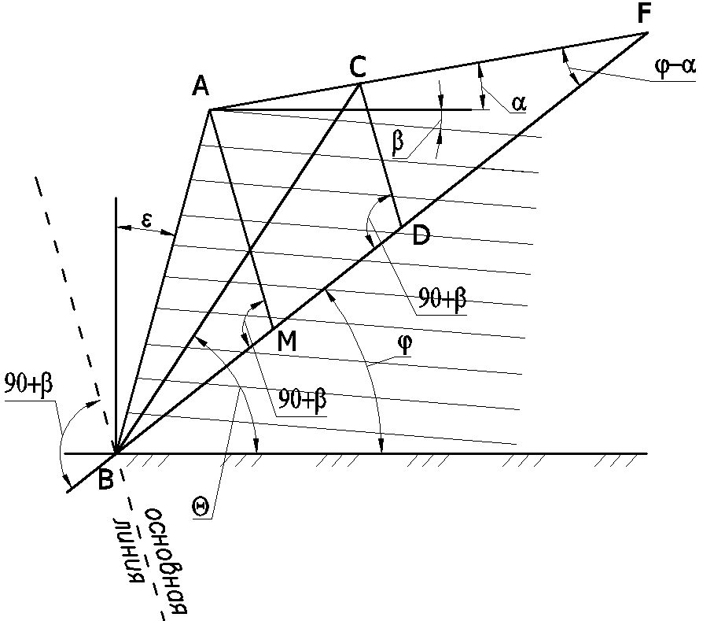
Рисунок 8 - Схема к расчету устойчивости положения армогрунтовой системы против скольжения по кругло-цилиндрической поверхность (КЦПС)
- 12.9.3.4 Выбрав ряд окружностей, отличающихся радиусом и расположением центра, находят минимальное отношение
где Куст -допускаемый или нормируемый коэффициент устойчивости, принимаемый равным 1,4.
- 12.9.3.5 Расчеты устойчивости на сдвиг по основанию, на опрокидывание и на сдвиг (скольжение) по КЦПС относятся к предельным состояниям первой группы, все нагрузки и характеристики грунтов берутся в расчетных значениях.
12.9.3.6 При несоблюдении условия по устойчивости удлинить армирующие элементы в нижней части армогрунтовой систем, после чего повторить расчеты.
12.9.4 Расчет устойчивости склона или откоса аналитическим методом
Оползневой массив грунта с произвольной поверхностью скольжения, показан на рисунке 9. а - разбивка оползневого массива на отсеки; б - силы, действующие на i -й отсек Рисунок 9 - Схема к аналитическому методу для расчета устойчивости склонов
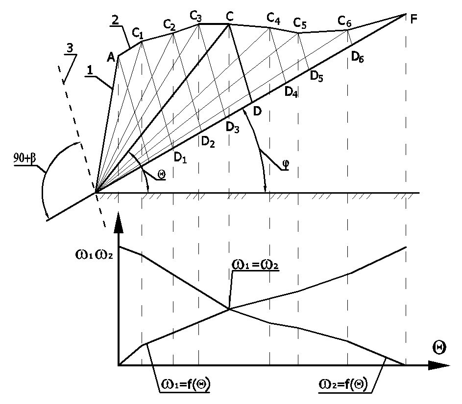
Силы, действующие на i -й отсек, показаны на рисунке 9:
СП 1325800.2019
Q i - равнодействующая веса i -го отсека и вертикальной нагрузки на его поверхности;
T i - составляющая силы Q i, параллельная основанию i -го отсека;
N i - составляющая силы Q i, нормальная к основанию i -го отсека;
R i - нормальная составляющая реакции основания на i -й отсек;
R i tg i - касательная составляющая реакции основания на i -й отсек, вызванная внутренним трением грунта;
C i ℓ i - касательная составляющая реакции основания на i -й отсек, вызванная сцеплением грунта;
i , C i - угол внутреннего трения и удельное сцепление грунта в основании i -го отсека;
E i-1 - равнодействующая давления отсека ( i - 1) на i -й отсек;
E i - равнодействующая давления отсека ( i + 1) на i -й отсек; α i - угол наклона к горизонтали основания i -го отсека; β i-1 , β i - углы наклона к горизонтали сил E i-1 и E i ; ℓ i - длина основания i -го отсека.
Оползневое давление и коэффициент устойчивости определяют по формулам
Угол наклона сил E i к горизонтали должен быть принят равным углу наклона к горизонтали реакции поддерживающего оползневой массив противооползневого сооружения и определяться углом внешнего трения грунта оползневого массива по бетону сооружения δ .
По кривой оползневых давлений вдоль склона по наибольшей величине 𝐸𝑚 подбирают прочность геосинтетических армирующих элементов.
где 𝐹 - расчетная нагрузка на основание;
𝐹 𝑛 - сила предельного сопротивления основания; 𝛾𝑐 - коэффициент условий работы, принимаемый в зависимости от вида грунтов; 𝛾𝑛 -коэффициент надежности по назначению, принимаемый по ГОСТ 27751, но не менее 1.
При недостаточной несущей способности основания следует принять конструктивные меры по его усилению: замена грунта; устройство свайного поля с гибким ростверком из высокопрочной геосинтетической ткани; или цементация основания.
12.9.6 Усиление слабого основания насыпи с помощью свайного поля и гибкого ростверка из геосинтетики
Для усиления слабых грунтов основания подходной автодорожной насыпи следует использовать метод «висячей» насыпи (рисунок 10).
А - поверхность планировки земли; Б - поверхность под раскладку геотекстиля Рисунок 10 - Усиление слабого основания насыпи с помощью свайного поля и гибкого ростверка из геосинтетики
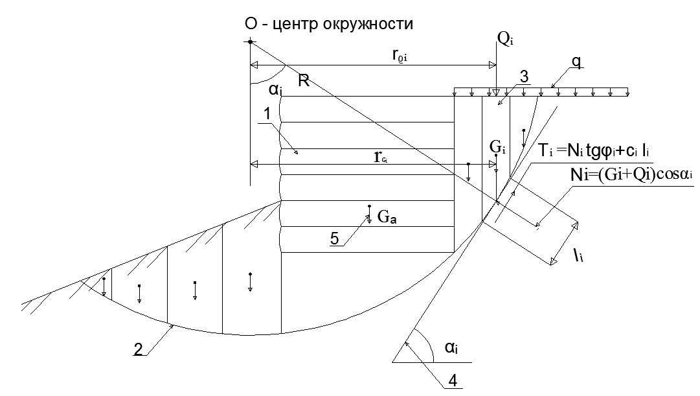
12.10Расчет по предельным состояниям второй группы
При несоблюдении требований СП 34.13330 к вертикальным деформациям основание армогрунтовой системы должно быть усилено:
- устройством «висячей» насыпи на свайном поле и гибком ростверке;
- устройством «плавающей» насыпи на армогрунтовых обоймах;
- заменой грунта, если слабые слои грунтов небольшой мощности;
- устройством песчаных или щебеночных свай, ускоряющих консолидацию грунтов и перераспределяющих нагрузку от насыпи на сваи и межсвайное пространство;
- цементацией основания или устройство поля из грунтоцементных свай.
12.11Численное моделирование
13Армогрунтовые системы подпорных стен
13.1Основные положения и различия в проектировании армогрунтовых систем подпорных стен и мостов
1 - железобетонная монолитная лицевая стенка; 2 - железобетонный блок парапетного ограждения; 3 - фибробетонная плита; 4 - дорожное покрытие; 5 - железобетонная плита опирания блока барьерного ограждения на армогрунт; 6 - щебеночная призма; 7 армогрунтовая система подпорной стены; 8 - зазор (200 мм) между армогрунтовой системой и лицевой стенкой
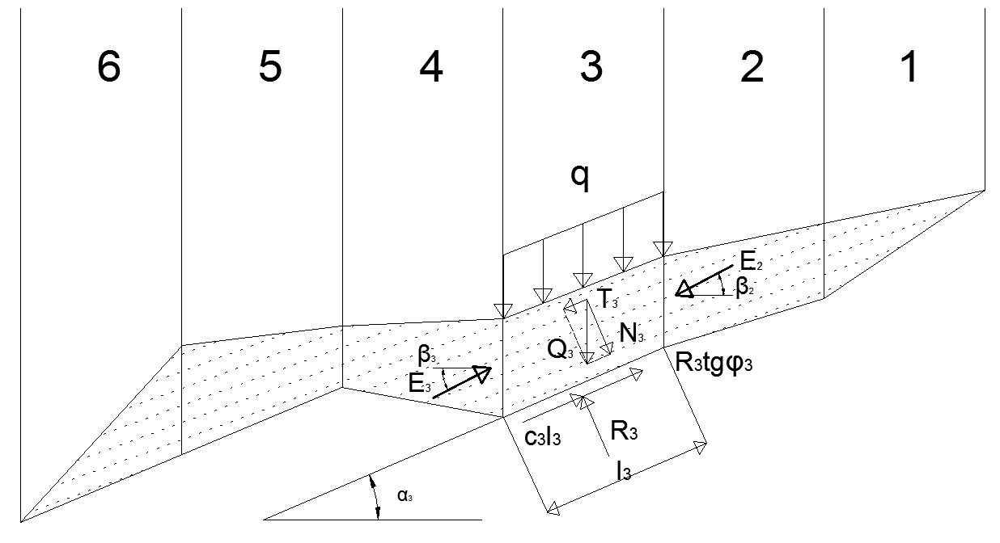
Рисунок 11 - Схема опирания железобетонного блока парапетного ограждения на армогрунтовую систему подпорной стены
СП 1325800.2019
АПриложение А. Особый случай предельного состояния армогрунтовой системы
Армогрунтовая система с переменной длиной армирующих прослоек и постоянной длиной их заделки за кулоновскую плоскость обрушения (рисунок А.1а).
Картина разрушения такой системы показана на рисунке А.1б. Плоскость обрушения грунта совпадает с концами армирующих прослоек. Разрушение конструкции сопровождается явно выраженным выпором грунта основания (рисунок А.1б). Это объясняется тем, что призма обрушения грунта имеет трапецеидальное очертание и опирается на грунт основания меньшим основанием трапеции. Грунты основания в большинстве случаев имеют более низкие прочностные характеристики по сравнению с грунтом засыпки армогрунтовой системы, что приводит к нарушению устойчивости основания и выпору грунта.
Расчетная схема армогрунтовой системы трапецеидального профиля показана на рисунке А.2а. Трапецеидальная призма обрушения находится в предельном равновесии под действием трех сил:
G - вес призмы обрушения;
R 1 - реакция запризменного грунта;
R 2 - реакция грунта основания.
Силовой треугольник показан на рисунке Б.2, из которого следует:
где θ - неизвестный угол наклона плоскости обрушения грунта; φ - предельный угол внутреннего трения грунта;
G - вес призмы обрушения, определяемый по формуле
Из условий максимума реакции основания R 2 с помощью простых преобразований, получают 𝐹 𝐴𝐵𝐶𝐷 = 𝐹 𝐶𝐷𝐹 .
СП 1325800.2019
Для нахождения угла θ используют простое геометрическое построение (рисунок А.3).
т.е. если от F отложить отрезок L, получают т. M и AD=DM. Тогда tgθ равен
Зная угол θ , реакцию 𝑅2 определяют по формуле
При проектировании конструкций такого профиля реакцию 𝑅2 следует сравнивать с несущей способностью грунта основания.
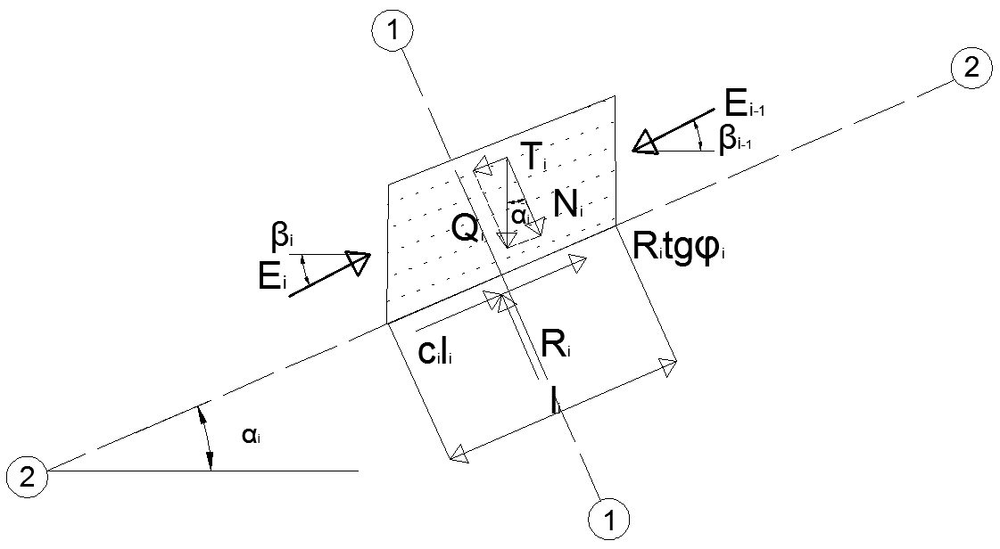
б а - схема армогрунтовой системы; б - схема разрушения армогрунтовой системы
Рисунок А.1
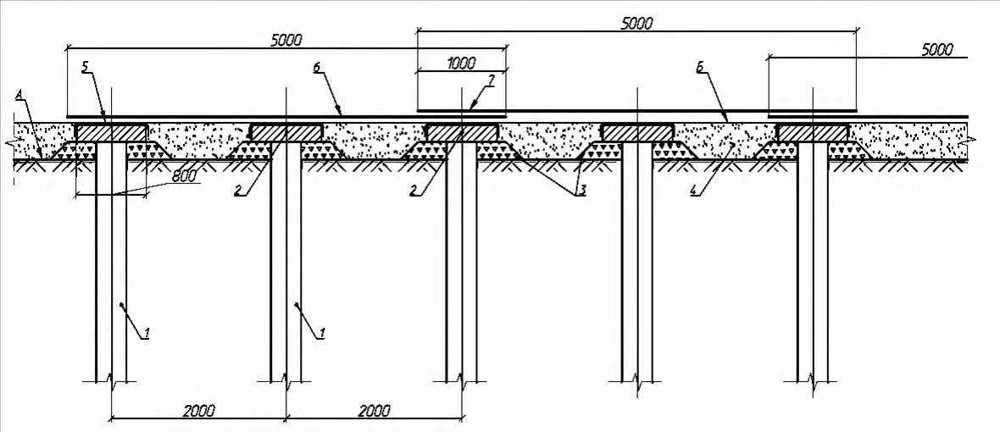
а - предельное равновесие призмы обрушения грунта; б - силовой треугольник
Рисунок А.2 - Расчетная схема армогрунтовой конструкции
Рисунок А.3 - Графический прием нахождения опасной плоскости обрушения грунта
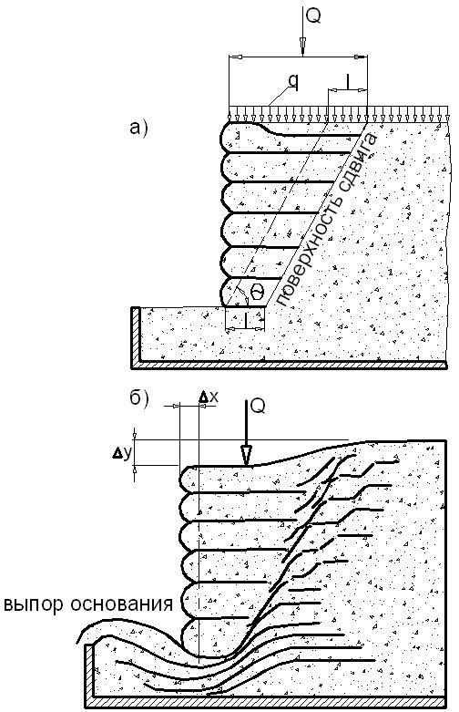
СП 1325800.2019
БПриложение Б. Проектирование геосинтетических оболочек для буровых свай
1 -геосинтетическая оболочка; 2 -арматурный каркас сваи; 3 -эластичные пояски для крепления оболочки к арматурному каркасу; 4 -кольца жесткости арматурного каркаса; 5 -прослойка слабых грунтов; 6 -прочные грунты; 7 -обсадная труба
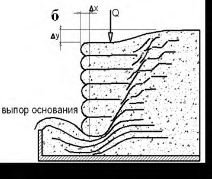
Рисунок Б.1 - Схема устройства буронабивной сваи в геосинтетической оболочке
На рисунке Б.1 оболочка 1, сшитая в виде рукава из геосинтетической ткани (полипропилен), одевается на арматурный каркас 2 до его погружения в обсадную трубу 7 и закрепляется на нем эластичными поясками 3 на уровне колец жесткости 4 каркаса. Диаметр оболочки Dоб должен быть больше диаметра каркаса DK, чтобы после извлечения обсадной трубы оболочка имела диаметр, превышающий внешний диаметр обсадной трубы Dтp, равный диаметру ствола скважины DСКВ, ДЛЯ обеспечения плотного контакта боковой поверхности сваи с грунтом и удержания свежеуложенного бетона сваи от проникновения в слабые слои грунта.
Для расчета необходимой прочности геосинтетического материала оболочки рекомендуется схема, представленная на рисунке Б.2.
Избыточное давление внутри оболочки определяют по формуле
где р б -интенсивность горизонтального давления бетона в нижней точке слабого слоя грунта.
где Н -глубина от отметки верха слабого слоя грунта; h cr -мощность слоя слабого грунта; γб -удельный вес бетона, γб= 24 кН/м³ ; р сг -интенсивность горизонтального давления слабого грунта в нижней точке слоя, определяемая по формуле
где λ -коэффициент бокового давления слабого грунта, который можно принять по формуле отпора грунта
где φ -угол внутреннего трения слабого грунта; γсг -удельный вес слабого грунта; q -интенсивность равномерно распределенной нагрузки на поверхности слабого грунта, определяемая по формуле
где hi и γi -мощность и удельный вес вышележащих слоев грунта.
1 -прочные грунты; 2 -слабая прослойка грунтов; 3 -геосинтетическая оболочка; 4 -свежеуложенный бетон сваи
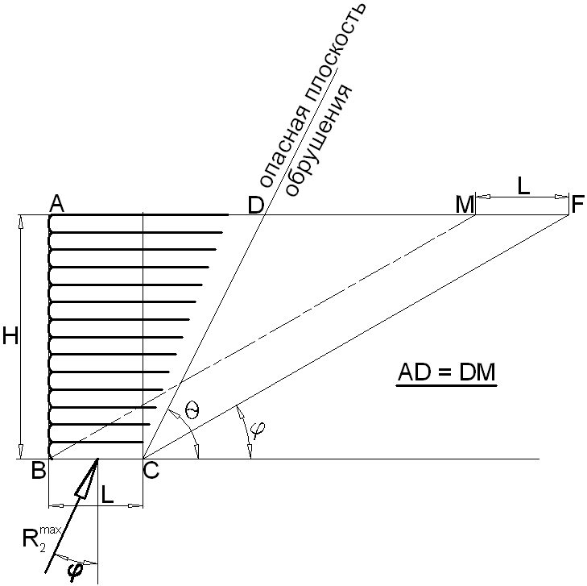
Рисунок Б.2 - Схема к расчету избыточного давления бетона на геосинтетическую оболочку
Условие равновесия по оси X (рисунок Б.3).
Рисунок Б.3 - Равновесие элемента оболочки
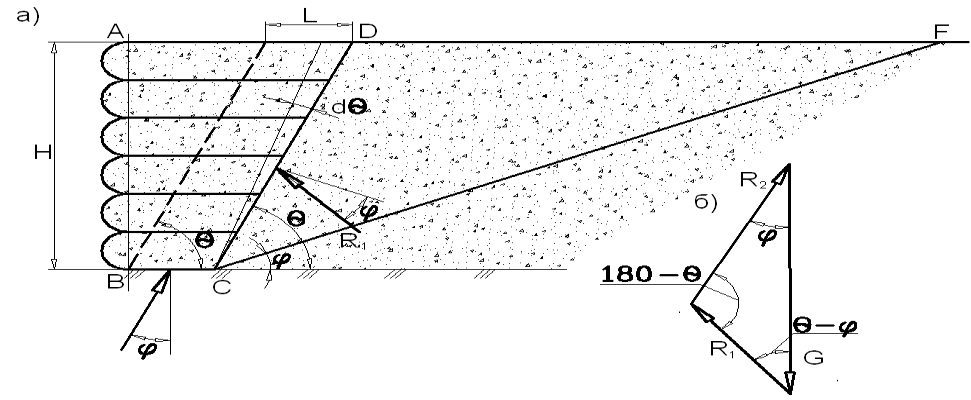
СП 1325800.2019
где δ -условная толщина оболочки.
где NR -радиальное растягивающее усилие в оболочке, на единицу ее длины, определяемое по формуле
ВПриложение В. Примеры обустройства и расчета армогрунтовых систем
1 - буровые столбы устоя; 2 - исключенная из расчета часть эпюры давления грунта; 3 - армирующие прослойки; 4 - оставшаяся часть эпюры давления грунта
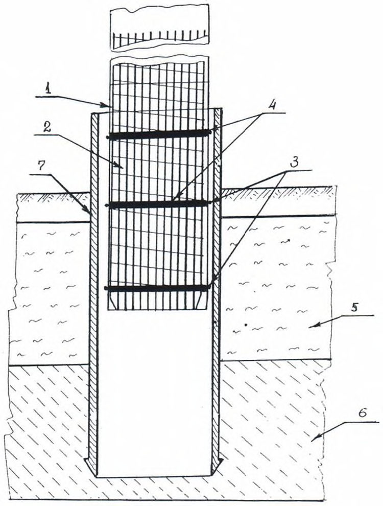
1 - монолитный ленточный фундамент; 2 - железобетонные блоки лицевой стенки; 3 - щебеночные дренажные призмы; 4 - армирующие элементы в виде арматурных каркасов; 5 - щебеночная подушка под диванный блок; 6 - горизонтальная плита диванного блока; 7 - подферменник; 8 - шкафная стенка; 9 - переходная плита; 10 дорожное покрытие; 11 - щебеночная подушка для опирания переходной плиты; 12 дренирующий грунт обратной засыпки; 13 - грунт насыпи
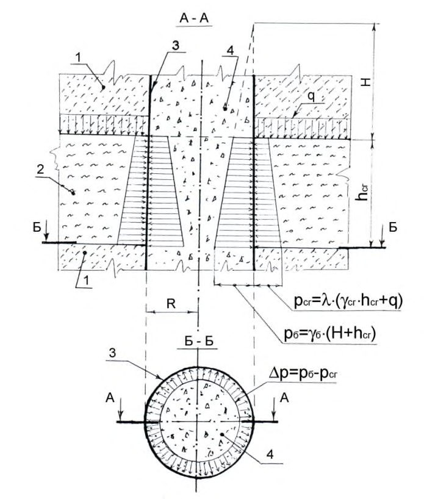
Рисунок В.2 - Устой диванного типа
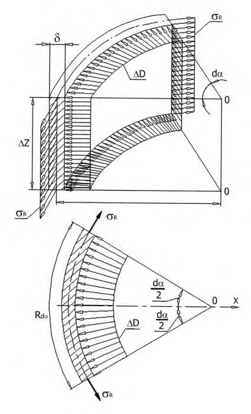
1 - пролетное строение; 2 - несущие элементы устоя; 3 - лицевая стенка армогрунтовой системы; 4 - сваи фундамента лицевой стенки; 5 - заглубление армогрунтовой системы для разгрузки ростверка устоя; 6 - опасная поверхность скольжения; 7 - естественная поверхность потенциально оползневого склона; 8 - армогрунтовая система; 9 - переходные плиты
Рисунок В.3 - Многофункциональные армогрунтовые системы мостов и путепроводов
1 - сваи железобетонные (призматические или круглые); 2 - железобетонный ростверк;3 железобетонный упор;4 - лицевая стенка; 5 - ниша в ростверке; 6 - буровые сваи Рисунок В.4 - Фундаменты свайные
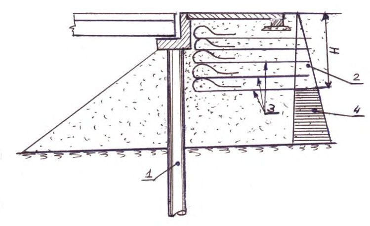
а в
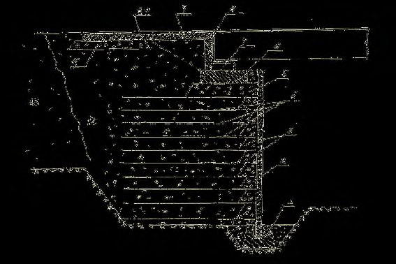
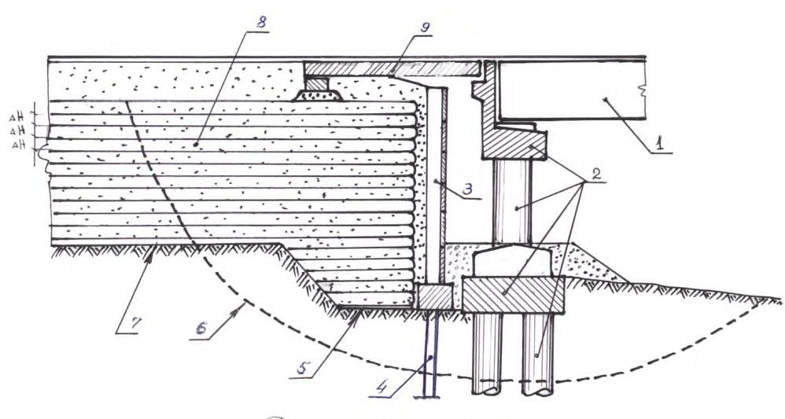
а - армирующие элементы из геотекстиля, лицевая стенка гибкая, не воспринимающая нагрузок; б - армирующие элементы из геоткани, лицевая стенка независимая, выполняющая защитную роль; в - армогрунтовая конструкция из рулонных материалов, лицевая сетка из тонких панелей, навешенных на армогрунтовую конструкцию внахлестку
Рисунок В.5 - Статически определимые армогрунтовые системы а в
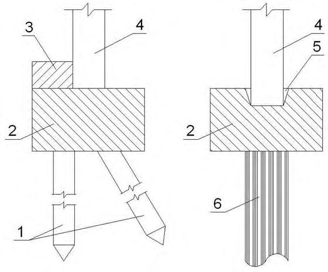
а лицевая стенка в виде сплошной плиты на всю высоту сооружения, армирующие элементы - металлические каркасы или георешетки; б - армирующие элементы из металлических каркасов, лицевая стенка из сборных блоков, воспринимающая давление грунта и передающая его на армирующие элементы; в - армирующие элементы из георешетки, лицевая стенка из габионов, заполненных щебнем для защемления георешеток
Рисунок В.6 - Статически неопределимые армогрунтовые системы б
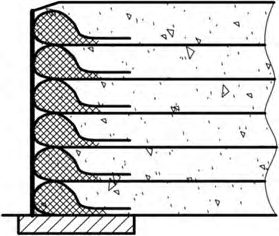
а в д
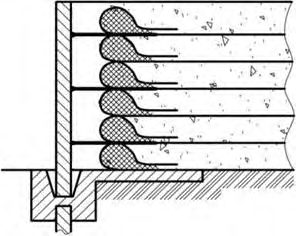
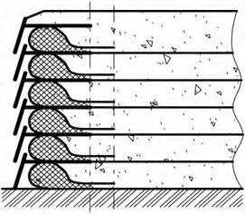
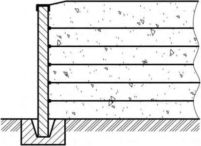
б
Рисунок В.7 - Виды механизмов разрушения армогрунтовых систем, приводящих их в предельные состояния
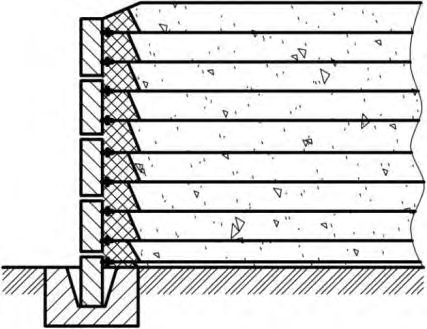
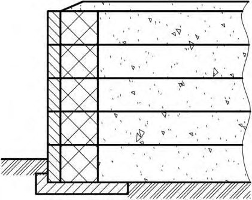
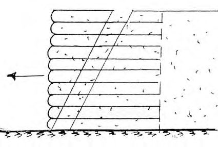
г е
1 - кратковременное испытание на разрыв; 2 - 2 мин; 3 - 1 сутки; 4 - 1 месяц; 5 - 1 год; 6 10 лет; 7 - 114 лет - прочность при разрыве
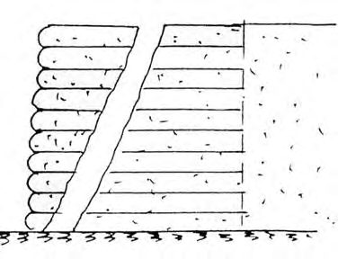
Рисунок В.8 - Общий вид семейства изохрон по результатам сертификации полимерных геосинтетических материалов на ползучесть
Рисунок В.9 - Определение разности относительного удлинения материала за определенный промежуток времени его эксплуатации
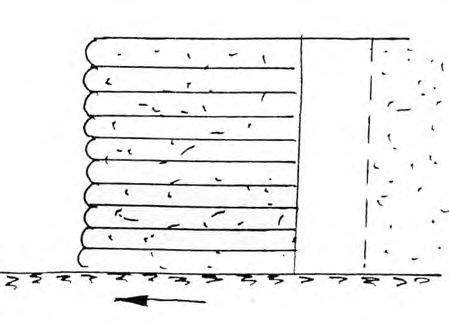
а б
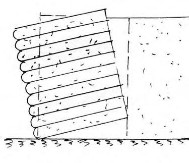
а силы, действующие на призму обрушения грунта АВС; б - силовой многоугольник АВ - расчетная плоскость армогрунтовой системы; АС - поверхность засыпки; - угол наклона расчетной плоскости АВ к вертикали; β - угол наклона к горизонтали армирующих элементов; G - вес призмы обрушения; Gс - равнодействующая веса G и сил инерции КхG и КуG ; η - угол отклонения силы Gс от вертикали; S1, S2, …, Sn - усилия в армирующих элементов; SΣ - суммарное усилие в армирующих элементах; R - реакция, действующая со стороны неподвижного массива грунта на призму обрушения; с - угол внутреннего трения грунта с учетом его снижения под действием сейсмических колебаний
Рисунок В.10 - Схема к расчету армогрунтовой системы с учетом сейсмического воздействия
Пример построения эпюры:
Ординаты эпюры подсчитаны по формуле 𝑝 = 𝜆𝑎𝛾 h .
Показанный прием применим для свободно деформируемой армогрунтовой системы, когда лицевая стенка не является силовым элементом и не влияет на распределение давления грунта и усилий в армирующих элементах.
После построения эпюры (рисунок В.11) усилия распределяют по армирующим элементам. Должно быть обеспечено равенство усилий в армирующих элементах площади эпюры.
СП 1325800.2019
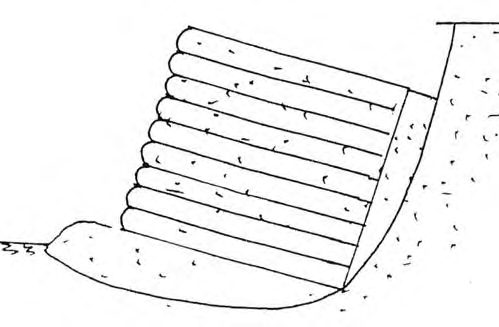
1 - лицевая грань армогрунтовой системы; 2 - армирующие элементы; 3 - поверхность грунта; 4 - эпюра интенсивности условно распределенного усилия в армирующих элементах; 5 - усилия в армирующих элементах
Рисунок В.11 - Построение эпюры интенсивности условно распределенного усилия в армирующих элементах и определение усилий в этих элементах
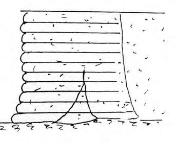
а - схема распределения продольных сил при постоянной по высоте марке геосинтетики и постоянном шаге H ; б точка А - ограничение роста продольных сил величиной 𝑆 а пр ; в - распределение касательных напряжений: l п - участок сил трения покоя;
Рисунок В.12 - Эпюры продольных сил в армирующих прослойках
Библиография
- [1] СП 50-101-2004 Проектирование и устройство оснований и фундаментов зданий и сооружений
- [2] СП 50-102-2003 Проектирование и устройство свайных фундаментов